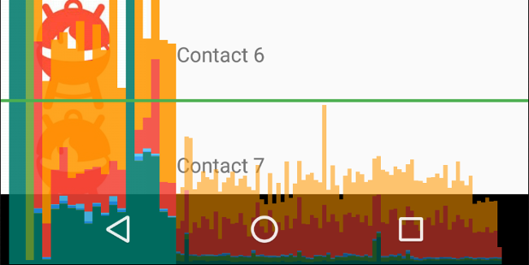

Andoid ANR&最佳实践&GPU
这篇博客是 Android 性能优化系列的最后一篇。我们将从 ANR、最佳实践、GPU、 和应用间切换4个方面来学习一下性能优化。
ANR
App使用过程中，可能会让用户感觉卡顿、不流畅。其中最糟糕的情况就是 “应用无响应(ANR)”。 当Android 检查到以下某一项条件时，便会针对特定应用显示ANR对话框：
- 在 5 秒内对输入事件（例如按键或屏幕轻触事件）没有响应。
- BroadcastReceiver 在 10 秒内尚未执行完毕。
第一种情况，是因为在主线程执行了耗时操作，用户事件需要等待耗时操作完成，才能执行。 所以：耗时操作(常见的有 网络 和 数据库)需要放到子线程执行。 关于线程的更多内容请参考-Andoid性能优化之进程和线程。
通常，100 到 200 毫秒是一个阈值，一旦超过此阈值，用户便会感到缓慢。如果用户需要长时间的等待，应用需要给出友好的提示，例如进度条。
最佳实践
下面是一些高效的编程实践，在编程中使用它们能够提高应用的整体性能。 但是，这些实践不太可能对性能产生显著提高，选择正确的算法和数据结构始终是开发者的首要任务。
编写高效代码有两个基本原则：
- 不需要做的工作就不要做(我理解为在实现需求的前提下，少写代码)
- 如果可以避免，就不要分配内存
下面是实践部分
- 避免创建短期临时对象，创建的对象数量越少，垃圾回收频率越低。用户体验越友好。
需要注意 大量创建零时对象的 情况，这可能会导致内存抖动。 -
减少布局嵌套。每个嵌套的布局对象都会增加布局阶段的开销。层次结构越扁平，完成布局阶段所需的时间越少。
ConstraintLayout 提供类似 RelativeLayout 的功能，但性能大大提高。 - 使用 static final 修饰常量，可提高访问速度。
- 使用“for-each”循环代替for循环；对于使用for循环的情况推荐下面的写法：
int len = localArray.length; //循环内部不再访问数组长度 for (int i = 0; i < len; ++i) { sum += localArray[i].splat; } - 整数优于浮点数，float优于double。
一般来说，在Android设备上，浮点数要比整数慢约2倍。float 和 double 在速度上木有区别，但 double 所占口空间大2倍。 -
了解和使用 Android 与 java 中的高效方法和类。
System.arraycopy() 方法的速度比手动编码的循环快约 9 倍。 SparseArray 比 HashMap 效率高。 -
使用 Android NDK 利用原生代码开发不一定比使用 java 更高效。
原生代码开发主要适用于开发者想将现有原生代码移植到Android的情况，而不适用于对Android应用中的java部分进行“加速”。
GPU
定义：GPU又称显卡。负责屏幕渲染，同时在深度学习和机器学习方面尤其有用。
- 分析GPU渲染速度
GPU 渲染模式分析工具以滚动直方图的形式直观地展示渲染界面帧所花费的时间（以每帧 16 毫秒为基准）。 在开发者选项中，打开“GPU 渲染模式分析”功能，再打开要分析的应用，即可看到下图：
- 对于每个可见应用，该工具将显示一个图形。
- 每一个竖条代表一帧，每个竖条的高度表示渲染该帧所花的时间(单位为毫秒)。
- 水平绿线为基准 16 毫秒。每个竖条的高度都不应超出绿线。 当然这是理想情况，实际上，应用超出绿色基线的情况特别常见。
- 该工具通过加宽对应的竖条并降低透明度来突出显示超出 16 毫秒阈值的帧。
- 每个竖条包含几种颜色，一种颜色对应渲染的一个阶段。颜色总数因设备的 API 级别不同而异。
- GPU 过度绘制
定义：在同一帧中多次绘制同一像素。
很多过度绘制是不可避免的，同时由于 Android 平台的发展，和手机硬件的升级迭代， 过度绘制问题已不再重要。大家只需记住一点即可：减少布局层次嵌套。
应用间切换
Android 系统将所有应用看做为松耦合组件的某种集合。应用可以无缝集成其他应用（例如调用相机拍照）。 用户使用过程中，也可能频繁的切换应用。开发团队应该意识到这些问题，努力开发一个能够与系统及其他应用无缝互动的应用。
- 不要丢弃数据
在使用我们的APP时，另一个Activity（例如“来电”应用）随时可能在我们自己的Activity上弹出，这将触发 onSaveInstanceState() 和 onPause() 方法，并可能导致应用被终止。
如果其他Activity出现时，用户已经在您的应用中编辑了数据，这很有可能导致数据丢失。 除非您事先保存了用户数据（覆写 onSaveInstanceState() 方法，在其中保存用户数据）。 这对于邮件应用，非常重要。而对于另一些应用，则影响很小。开发时，要灵活评估是否需要编写这部分代码。
- 通过 ContentProvider 向其他应用公开数据。这是一个可维护，易扩展，低耦合的设计。
- 应用在后台时，采用通知的方式和用户交互，禁止直接弹出Activity。
-
模拟慢速网络环境
在办公室，网络环境总是很好。但现实情况是，用户可能处于各种网络环境中。 我们需要关注在慢速网络甚至无网络环境下，App的表现。在 Android Studio 中通过 AVD 管理器可以模拟慢速网络， 以测试应用在慢网络(最低标准是GPRS)情景下的表现。